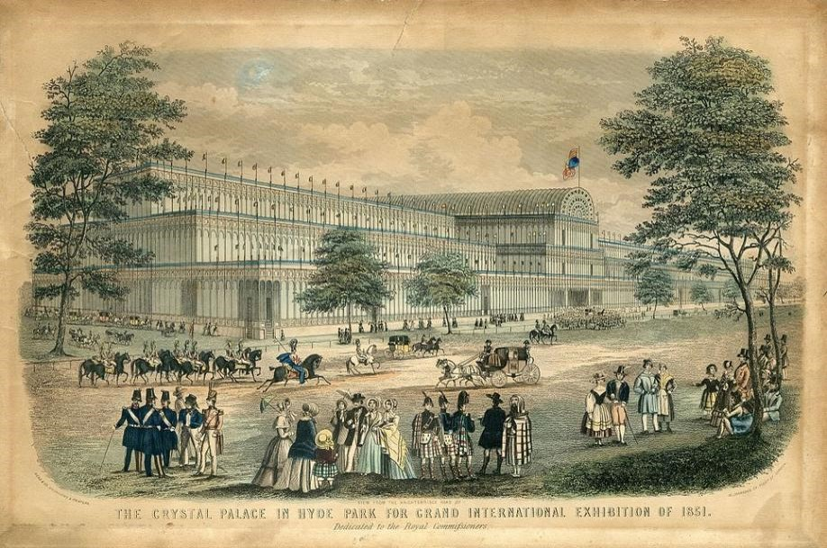
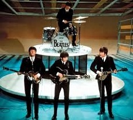

Lecture 6
The United Kingdom in the 19th–21st Centuries
The 19th century began with the Act of Union of 1801 which united the Kingdom of Great Britain and the Kingdom of Ireland to create the United Kingdom of Great Britain and Ireland. The act came into force on January 1, 1801, and the Parliament of the United Kingdom had its first meeting on January 22, 1801. When the century began, the country was locked in a war with France, during which an invasion by a French army was a real possibility because Britain had a much smaller population (11 million compared to 27 million in France in 1801). This disadvantage was offset by Britain’s wealth (from a more developed economy and extensive overseas trade) and by the British superiority at sea. In 1803 France had 23 ships of the line; Britain had 34 in service and another 77 in reserve.
The Napoleonic Wars
The French Revolution (1789) created fear all over Europe. The British government was also afraid that revolution would spread to Britain. As an island, Britain was in less danger, and as a result was slower than other European states to make war on the French Republic. But in 1793 Britain went to war after France had invaded the Low Countries (today, Belgium and Holland). One by one the European countries were defeated by Napoleon. Most of Europe fell under his control.
George III was the King of the United Kingdom of Great Britain and Ireland at that time until his death in 1820. He was the third British monarch of the House of Hanover, but unlike his two predecessors, he was born in Great Britain, spoke English as his first language, and never visited Hanover. His reign was marked by a series of military conflicts; the most serious of them was the war against revolutionary and Napoleonic France.
Britain decided to fight France at sea because it had a stronger navy, and because its own survival depended on the control of its trade routes. British policy was to damage French trade by preventing French ships, including their navy, from moving freely in and out of French seaports.
The commander of the British fleet, Admiral Horatio Nelson, won brilliant victories over the French navy, near the coast of Egypt, at Copenhagen, and finally near Spain, at Trafalgar in 1805, where he destroyed the French-Spanish fleet. Nelson was himself killed at Trafalgar, and became one of Britain’s greatest national heroes. His words to the fleet before the battle of Trafalgar, “England expects that every man will do his duty”, have remained a reminder of patriotic duty in time of national danger.
In the same year as Trafalgar, in 1805, the British army landed in Portugal to fight the French. The army, with its Portuguese and Spanish allies, was eventually commanded by Wellington, a man who had fought in India. Like Nelson he quickly proved to be a great commander. After several victories against the French in Spain he invaded France. Napoleon, weakened by his disastrous invasion of Russia, surrendered in 1814. But the following year he escaped and quickly assembled an army in France. Wellington, with the timely help of the Prussian army, finally defeated Napoleon at Waterloo in Belgium in June 1815.
Political and Economic Issues
When peace came in 1815 Britain was in greater danger at home than abroad. During the Napoleonic Wars Britain had sold clothes, guns, and other necessary war supplies to its allies’ armies as well as its own. And suddenly there came no longer such a need for factory-made goods, and many people lost their jobs. More than 300,000 men from Britain’s army and navy now were looking for work. The general misery began to cause trouble. Many people looked for a better life in towns. Between 1815 and 1835 Britain changed from being a nation of country people to a nation mainly of townspeople.
In the 1820s, Prime Minister Robert Peel turned his attention to the problem of crime by establishing a regular police force for London in 1829. The government employed a specially trained army of men to catch criminals. Although at first Londoners laughed at the blue-uniformed men in their top-hats, during the next thirty years almost every other town started a police force of their own. The new police units soon proved themselves successful, as much crime was pushed out of larger cities, then out of towns and finally out of the countryside. Robert Peel was able to show that certainty of punishment was far more effective than cruelty of punishment.
The beginning of the century also saw the innovations of Robert Owen, a factory owner from Scotland, who gave his workers shorter working hours and encouraged trade unions. He built his factory in the countryside, away from the smog and dirt of big cities, and provided good housing for workers and a school for their children. Owen was able to prove that his workers produced more goods in less time than those forced to work longer hours. Better working and living conditions resulted in an increase in labour productivity (Robert Owen Quotes).
The main political issue of the 1830s was the Reform Bill, which became law in 1832. The bill set up a system of registration that encouraged political party organization, both locally and nationally. That measure weakened the monarch and the House of Lords. Other reforms came in a quick succession. In 1833 slavery was abolished. By the New Poor Law of 1834 workhouses were opened. They were meant to provide the homeless with work and shelter. Abandoned children were also taken care of in workhouses. But although the new system involved supervision by a central board (or committee), working and living conditions of people in workhouses were even worse than those of slaves. As the country’s industry was rapidly developing, child labour became common practice. Children from poor families started working at the age of 4 or 5. They worked in textile factories and in mines for 16 hours a day. There were cases when little workers had to stay at work for 18 hours. They worked and slept in the same place. It was only in 1849, during the reign of Queen Victoria, that an act of Parliament limited the working hours of children under the age of 10 to 10 hours a day.
During the economic depression of 1837 the reform spirit declined. Working conditions became even worse. The protest organization, known in history as the Chartist movement, came into being. The Chartists demanded the immediate adoption of the People’s Charter, which might have transformed Britain into a political democracy with universal male suffrage, equal electoral districts and the secret ballot. It was also expected to improve living standards. Millions of workers signed Charter petitions in 1839, 1842 and 1848. Some Chartist demonstrations turned into riots. Parliament repeatedly rejected the People’s Charter and the idea was never realized.
Many British left the UK for North America or the colonies in search for a better life. At the same time the Irish moved in large numbers to England and Scotland. Migrants from across the world also settled in Britain, notably Jews from Europe and Russia. Between 1801 and 1871 alone the population of the United Kingdom doubled.
Outside Europe, Britain wished its trading position to be stronger than anyone else’s. It defended its interests by keeping ships of its navy in almost every ocean of the world. That was possible because it had taken over and occupied a number of places during the war against Napoleon. The government’s policy now was to control world traffic and world markets to Britain’s advantage.
The British Empire
Britain’s empire was built on trade and the need to defend it against rival European countries. After the loss of the American colonies in 1783, the idea of creating new colonies remained unpopular until the 1830s. Instead, Britain watched the oceans carefully to make sure its trade routes were safe, and fought wars in order to protect its “areas of interest”. In 1839 it attacked China and forced it to allow the profitable British trade in opium from India to China. The “Opium Wars” were one of the more shameful events in British colonial history.
One section of this empire was Ireland. During this century the British culture and way of life came to predominate in Ireland. In the 1840s, the potato crop failed two years in a row and there was a terrible famine. Millions of peasants with the Irish Gaelic language and customs either died or emigrated. By the end of the century almost the whole of the remaining population were using English as their first language.
Thousands of British civil servants and troops were used to govern India. At the head of this administration was a viceroy (governor) whose position within the country was similar to the monarch’s in Britain itself. Because India was so far away, the British officials spent most of their working lives there and so developed a distinctly Anglo-Indian way of life. They imposed British institutions and methods of government on the country. Many Indians resented British interference in their religious and social customs and in 1857 Indian soldiers mutinied against their British officers. It was a major, but ultimately unsuccessful, uprising in India in 1857–1858 against the rule of the British East India Company, which functioned as a sovereign power on behalf of the British Crown. The rebellion posed a considerable threat to British power in that region. The rebellion known by many names, including the Indian Mutiny, the Great Rebellion, the Revolt of 1857, and the First War of Independence was suppressed in 1858. In 1876 Queen Victoria became Empress of India.
In 1873 the British became concerned with the political affairs of Egypt and its neighbour, the Sudan (which had been under Egyptian control since 1821). In the early 1880s Britain sent troops to Egypt and the Sudan to suppress uprisings in Egypt and rebellions in the Sudan against Egyptian control, and in late 1890s the troops defeated the Sudanese and established Anglo-Egyptian control of the Sudan.
Large parts of Africa also belonged to the empire. Africa’s vast natural resources, which included gold and diamonds, caused colonizing of the continent. After some wars with the Dutch settlers and the native population, the British took control over the southern part of Africa, which became part of the British Empire.
The reasons for this mass colonization were to get more lands, to have more power, to become richer. One more reason was that the population of Britain from the 1830s was rapidly growing, and soon the territory of the British Isles would not hold all the population. So the solution was found in the development of colonies for British settlers in different parts of the world.
In Canada, Australia and New Zealand settlers from the British Isles formed the majority of the population. Large-scale emigration to these countries created extensive changes in the national population profile. Soon the white colonies were allowed to govern themselves. Officially they no longer depended on Britain, but they still accepted the British monarch as their head of state.
By the end of the century, the British Empire comprised nearly one-quarter of the world’s land surface and more than one-quarter of its total population. Imperialists could boast that the sun never set upon the British Empire.
A change in attitude in Britain towards colonization during the 19th century gave new encouragement to the empire builders. Previously, colonization had been seen as a matter of settlement, of commerce, or of military strategy. The aim was simply to possess territory, but not necessarily to govern it. By the end of the century, colonization was seen as a matter of destiny. There was an enormous increase in wealth during the century, so that Britain became the world’s foremost economic power. This, together with long years of political stability, gave the British a sense of supreme confidence, even arrogance, about their culture and civilization. The British came to see themselves as having a duty to spread their culture and civilization around the world (‘the white man’s burden’).
Queen Victoria and the Monarchy
By the late 1830s the monarchy was beginning to look a disreputable and even unnecessary institution. Kings were not expected to rule but to reign. From this low point the monarchy was rescued by Queen Victoria, one of the most notable figures in British royal history. Victoria ascended the throne at the age of 18 following the death of her uncle, William IV. Her achievement was to restore respect and usefulness to the Crown. She possessed both common sense and high principles. She had the qualities that the middle class most admired – devotion to family and friends. The Queen’s conscientious approach to her duties did much to raise the reputation of the monarchy.
Victoria married a German, Prince Albert who died at the age of 42 in 1861. She could not get over her sorrow at his death and for a long time refused to be seen in public. This was a dangerous thing to do. Newspapers began to criticize her, and some even questioned the value of the monarchy. Many radicals actually believed the end of the monarchy was bound to happen as a result of democracy. Most had no wish to hurry this process, and were happy to let the monarchy die naturally. However, the queen’s advisers persuaded her to take a more public interest in the business of the kingdom. She did so, and she soon became extraordinarily popular. By the time Victoria died the monarchy was better loved among the British than it had ever been before (Kings & Queens of England: Episode 6: Moderns).
One important step back to popularity was the publication of the Queen’s book Our life in the Highlands in 1868. The book was her own diary with drawings, their life with Prince Albert at Balmoral, her castle in the Scottish Highlands. It delighted the public, in particular the growing middle class. They had never before known anything of the private life of the monarch, and they enjoyed being able to share it. She referred to the Prince Consort simply as “Albert”, to the Prince of Wales as “Bertie”, and to the Princess Royal as “Vicky”. The Queen also wrote about her servants as if they were members of her family.
The Victorian Era
The Victorian era began in 1837 and ended with Queen Victoria’s death in 1901. During that time the British Empire reached its height. Industry and trade expanded rapidly, and railways and canals crossed the country. Science and technology made great advances.
Britain became powerful because it had enough coal, iron and steel for its own enormous industry, and could even export them in large quantities to Europe. With these materials it could produce new heavy industrial goods like iron ships and steam engines. Britain made and owned more than half the world’s total shipping. This great industrial empire was supported by a strong banking system developed during the 18th century.
In 1851 Queen Victoria opened the Great Exhibition of the Industries of All Nations inside the Crystal Palace, in London. The exhibition aimed to show the world the greatness of Britain’s industry. The greatest example of Britain’s industrial power in the mid-19th century was its railway system. Indeed, it was mainly because of this new form of transport that six million people were able to visit the Great Exhibition, 109,000 of them on one day. Many of them had never visited London before.
In 1851 the government made the railway companies provide passenger trains which stopped at all stations for a fare of one penny per mile.
Poor people’s lives also benefited by the railway. Many moved with the middle class to the suburbs, into smaller houses. The men travelled by train to work in town. Many of the women became servants in the houses of the middle class. By 1850 16 % of the population had been “in service” in private homes, more than were in farming or in the cloth industry.
In fact industrialists built the railways to transport goods, not people, in order to bring down the cost of transport. By 1870 the railway system of Britain was almost complete. The canals were soon empty as everything went by rail. The speed of the railway even made possible the delivery of fresh fish and raspberries from Scotland to London in one night.
The country was becoming industrialized and overseas trade was increasing. The 19th-century Britain was the “workshop of the world”. British factories were producing more than any other country in the world.
Shrewsbury, England
The Victorian age was the peak of the so-called “English summer”. It was not only due to the industrial development and colonial expansion of the country. British self-confidence was built not only upon power but also upon the rapid scientific advances being made at the time. In 1857 Charles Darwin published The Origin of Species. His theory of evolution, based upon scientific observation, was welcomed by many as proof of mankind’s ability to find a scientific explanation for everything. But for churchgoing people, who were mostly to be found among the middle class, the idea that all animals, including human beings, had developed from more simple creatures shook this self-confidence and led to a crisis in the Church. Most of the churchgoing population believed every word of the Bible. They found it difficult to accept Darwin’s theory that the world had developed over millions of years, and had not been created in six days.
In the 19th century the middle class grew quickly and included those who worked in the professions, such as the Church, the law, medicine, the civil service, the diplomatic service, merchant banking, the army and the navy. By the 1850s, more and more people were getting an education. Those of the middle class who could afford it sent their sons to fee-paying “public” schools which aimed not only to give boys a good education, but to train them in leadership by taking them away from home and making their living conditions hard. Those public schools provided many of the officers for the armed forces, the colonial administration and the civil service.
There were great changes in social structure. Most people now lived in towns and cities. They no longer depended on country landowners for their living but rather on the owners of industries. The factory owners held the real power in the country. As they established their power, so they established a set of values which emphasized hard work, thrift, family life, an awareness of one’s duty and absolute honesty in public life. This is the set of values which we now call Victorian.
In the second half of the century two new parties appeared: the Liberal Party, which was formed in 1859 after the split in the Tory party, and the Independent Labour Party, which was formed in 1893 by and for the working class, and was set up and renamed the Labour Party in 1900. The British political system of today was mostly built in the 1860s and 1870s, when a much stricter “two-party” system developed in Britain. The two parties, Tory (or Conservative as it became officially known) and Liberal became the most prominent at that time.
The government introduced a few democratic reforms. One of them concerned the right to vote. In 1867 all male householders in towns became ‘eligible to vote and stand for Parliament’. That added over a million voters to the electorate. In 1884 the right was extended to all male householders and in 1918 to all men over 21.
Between 1875 and 1914 the condition of the poor in most of Britain greatly improved as prices fell by 40 % and real wages doubled. Life at home was made more comfortable. Most homes now had gas both for heating and lighting. As a result of falling prices and increased wages, poor families could eat better food, including meat, fresh milk and vegetables.
In 1870 and 1891 two Education Acts were passed: all children had to go to school up to the age of thirteen, where they were taught reading, writing and arithmetic. In Scotland there had been a state education system since the time of the Reformation. There were four Scottish universities, three dating from the Middle Ages. In Wales schools began to grow rapidly in the middle of the century, partly for nationalist reasons. By the middle of the century Wales had a university and a smaller university college. England now started to build “redbrick” universities in the new industrial cities. The term “redbrick” distinguished the new universities, often brick-built, from the older, mainly stone-built universities of Oxford and Cambridge. These new universities were unlike Oxford and Cambridge, and taught more science and technology to feed Britain’s industries.
By the 1880s, for the first time, working people could think about enjoying some free time. Apart from museums, parks, swimming pools and libraries recently opened in towns, the real popular social centre remained the alehouse or pub. Thousands of them were built in new suburbs. Using the railway people began to travel for pleasure. The seaside was a place where families could take holidays together.
By the end of the 19th century, two sports, cricket and football, had become of great interest to the British public. Cricket, which had started as a “gentleman’s” sport, became an extremely popular village game. Although it first developed in the 18th century, it was not until a century later that its rules were organized. From 1873 a county championship took place each year. Cricket was a game which encouraged both individual and team excellence and taught respect for fair play. As one Englishman said at the time, “We have a much greater love of cricket than of politics”. Cricket was successfully exported to the empire: to the West Indies, India, Pakistan, Ceylon, Australia and New Zealand. But while it was popular in Wales, it never had the same popularity in Scotland.
Britain’s other main game, football, was also organised with proper rules in the 19th century. As an organised game it was at first a middle-class or gentlemen’s sport, but it quickly became popular among all classes. Football soon drew huge crowds who came to watch the full-time professional footballers play the game. By the end of the 19th century almost every town between Portsmouth on the south coast of England and Aberdeen in north-east Scotland had its own football, or “soccer” team.
Despite reforms, the nature of the new industrial society forced many people to live and work in very unpleasant conditions .Writers and intellectuals of the period either protested against the horrors of this new style of life (as Dickens did) or simply ignored it. Many, especially the Romantic poets, praised the beauties of the countryside and the simplicity of the country life. It was a new development. In previous centuries the countryside just existed, and it wasn’t something to be discussed or admired. But since that time most British people have developed a sentimental attachment to the idea of the countryside.
A New Trend in Literature
The Victorian age gave rise to a new trend in literature – critical realism. The best-known poets of the period were Alfred Tennyson, Robert Browning and Robert Louis Stevenson. But the dominant form of literature during this period was the novel.
Charles Dickens, the greatest master of the century, exhibited an astonishing ability to create living characters. Another master of characterization, William Makepeace Thackeray satirized romantic sentimentality and the snobbishness of upper-class life.
The 19th century saw a surprisingly big number of women-writers who did not only write for pleasure, but left a substantial trace in English literature. One of them was Jane Austen, who wrote about right judgement, right behaviour and the formation of character. Elizabeth Gaskell described the lives of industrial and agricultural workers in the wake of the Chartist movement with realism and sympathy. George Eliot is the pen-name of Mary Ann Evans. Her best-known novel is The Mill on the Floss. The famous Brontё sisters, brought up in poor surroundings, wrote the books which rank among the most popular novels of the century. Charlotte Brontё described the life of a poor and plain-looking girl who had a strong character and won her happiness. Emily Brontё is the author of one of the greatest English novels, Wuthering Heights.
The Irish-born intellectual Oscar Wilde was a poet, a writer and a dramatist. He led an eccentric life that fuelled his witty satires and epigrams on Victorian society. As a member of the aesthetic movement in literature, Wilde advocated the idea of art for art’s sake. His plays sparkle with clever paradoxes and witty dialogues.
Britain’s Decline as a World Power
At the beginning of the 20th century Britain was no longer the world’s richest country. Britain was losing its leading role in the world. Victoria’s death in 1901 coincided with the beginning of the decline in the power of the Empire. The white settler colonies had always enjoyed considerable self-government and in the first decade Canada, Australia, South Africa and New Zealand were all allowed to draw up their own constitutions to become dominions. This select group of nations within the empire was often referred to as the British Commonwealth. The non-white colonies were not so fortunate: India was subjected to an often harsh military rule, and vast areas of Africa remained firmly under the British domination.
Whatever the reason, the first twenty years of the century were a period of extremism in Britain. The Suffragettes women demanding the right to vote, were prepared both to damage property and to die for their beliefs; the problem of Ulster in the north of Ireland led to a situation in which some sections of the army appeared ready to disobey the government; and the government’s introduction of new types and levels of taxation was opposed so absolutely by the House of Lords that even Parliament, the foundation of the political system, seemed to have an uncertain future in its traditional form.
It was from the beginning of this century that the majority of the population finally began to make its voice heard. In Parliament, the Labour party gradually replaced the Liberals as the main opposition to the Conservatives. In addition, trade unions managed to organize themselves. In 1926, they were powerful enough to hold a General Strike, and from 1935 until the 1980s the Trade Union Congress was probably the single most powerful political force outside the institutions of government and Parliament.
On the Eve of World War I
At the beginning of the 20th century there was still a general belief that the nation could achieve steady economic and social improvement. In 1909 Labour Exchanges were opened, where those without work could look for jobs. Two years later all working people were made to pay for “national insurance”. It was another new idea that those unable to earn money through sickness or unemployment would be helped by the state. So the New Liberals with the outstanding political figure of the period, David Lloyd George, began establishing what became the “welfare state”. Government, said the Liberals, “has a duty to protect the weak against the strong”.
But at the beginning of the century it became clear that Britain was no longer as powerful as it had been. Britain was not the only European country with an empire. France, Germany, Belgium, Austria and Hungary were all imperialist powers, and other countries such as Italy also had dreams of empire. British industry no longer enjoyed the total domination of world markets that it had in the 19th century; Germany was rapidly becoming the dominant economic power in Europe. There seem to be a number of reasons. Other countries, Germany particularly, had greater natural wealth, including coal and iron, and wheat-producing lands. Most British people invested their money abroad rather than in building up home industry. Public schools, the private system of education for the richer middle class, did not encourage business or scientific studies. Britain had nothing to compare with the scientific and technical education of Germany.
Suddenly Britain realised that it no longer ruled the seas quite so assuredly, and that others had more powerful armies and more powerful industries. The rivalry between the great European powers led to the outbreak of World War I in 1914. The danger of war with Germany had been clear since the beginning of the century, and that fact brought France and Britain together. Britain was particularly frightened of Germany’s modern navy, which seemed a good deal stronger than its own. The government started a programme of building battleships to make sure of its strength at sea. The reason was simple. Britain could not possibly survive for long without food and other essential goods reaching it by sea. From 1908 onwards Britain spent large sums of money to make sure that it possessed a stronger fleet than Germany.
Britain in World War I
In August 1914 Germany’s attack on France took its army through Belgium. Britain immediately declared war because it had promised to guarantee Belgium’s neutrality by the treaty of 1838. But Britain also went to war because it feared that Germany’s ambitions would completely change the map of Europe.
Germany nearly defeated Britain and France, in the first few weeks of war. It had better trained soldiers, better equipment and a clear plan of attack. Four years of bitter fighting followed, both armies living and fighting in the trenches, which they had dug to protect their men. Somehow the government had to persuade the people that in spite of such disastrous results the war was still worth fighting. The nation was told that it was defending the weak (Belgium) against the strong (Germany) and that it was fighting for democracy and freedom.
When Russia, after the Bolshevik revolution of 1917, made peace with Germany, the German generals hoped for victory against Britain and France. But German submarine attacks on neutral shipping drew America into the war against Germany. The arrival of American troops in France ended Germany’s hopes, and it surrendered in November 1918. It was the bloodiest war in history.
Between the Two World Wars
An important political development during the war was the rapid growth of the Labour Party. In Parliament, the Labour party gradually replaced the Liberals (the descendants of the Whigs) as the main opposition to the Conservatives (the descendants of the Tories). The Labour Party, however, was not “socialist”. Its leaders were members of the middle class. Instead of a social revolution, they wanted to develop a kind of socialism that would fit the situation in Britain.
The war changed the position of women in the British society. Britain would have been unable to continue the war without the women who took men’s places in the factories. By 1918 29 % of the total workforce of Britain was female. In 1918, some women over the age of 30 gained the right to vote.
The cost of the war led to an enormous increase in taxation, from 6 % of income in 1914 to 25 % in 1918. The feeling of discontent and disappointment with the existing living conditions after the war led to a General strike of 1926. Trade unions managed to organize themselves and become a powerful political force. The General strike ended after nine days, partly because members of the middle class worked to keep services like transport, gas and electricity going. But it also ended because of uncertainty among the trade union leaders. Most feared the dangers both to their workers and the country of “going too far”. Like all over Europe and America Britain also experienced a serious economic crisis (the Great Depression). Fortunately, Britain avoided a serious political crisis in the 1920s.
In the 1930s the British economy started to recover, especially in the Midlands and the south. That could be seen in the enormous number of small houses which were being built along main roads far into the countryside. Unplanned suburbs grew especially quickly around London, where the underground railway system, the tube, spread out into the country.
In 1935 it was already clear that Germany was preparing to regain its position in Europe, and if necessary, by force. The British government was faced with the problem of rebuilding the army and the navy, which meant huge investments in heavy industry. By 1937, the industry was producing weapons, aircraft and equipment for war.
At the same time Germany and its European and Asian allies (the Axis powers) – Italy and Japan – were taking advantage of Britain and France’s indecision and started occupying territories of other states. In order to avoid a war, Britain cooperated with Germany in the take-over of the German-speaking parts of Czechoslovakia by Germany. On his return from Munich, the British Prime Minister said that for the country it meant a temporary peace. Six months later Germany occupied the rest of Czechoslovakia. Britain, realizing that the war was inevitable, gave a guarantee of support to Poland in case of a German invasion. In September 1939 Germany invaded Poland, and Britain declared war.
Britain in World War II
Few people in Britain realized how strong the German army was. The first period of the war, the end of 1939 was relatively quiet for Britain as it was not involved in any military action. But in 1940 the Germans started bombing British cities. London and Coventry were particularly badly damaged. The Battle of the Atlantic began the same year. The German strategy was to cut off Britain’s supplies of food and munitions by submarine action. Rationing for essential items of food, clothing and fuel was introduced. In 1941 Britain received first shipments of food and arms from the USA as part of the Lend-Lease Plan.
The war began as a traditional European struggle where Britain fought to save the “balance of power” but it quickly became worldwide. Both sides wanted to control the oil fields in the Middle East and the Suez Canal, which was Britain’s route to India.
In 1941, Japan, which was Germany’s ally, attacked Britain’s colonial possessions in Malaya, Burma and India. As a result, the soldiers of the Empire had to fight against the Axis of Germany, Italy and Japan practically all over the world. In the same year the two most powerful world nations, the USSR and the USA, had to join the war. The Allied Forces joined their efforts in fighting against the common enemy.
In February 1945, the leaders of the Allied Forces, Churchill, Roosevelt and Stalin, met for a conference in Yalta, where the final defeat of Germany was planned. Germany was to be demilitarized and divided into 4 zones of occupation. The Allied leaders also agreed that it was necessary to establish the United Nations Organization which was set up in 1945 to maintain world peace and foster international cooperation.
The war in Europe ended in 1945 when the allied troops defeated Germany. Germany signed the Act of Capitulation on May 8, 1945, that is why May 8 is celebrated in Europe and the USA as Victory Day. But World War II ended only in September. When Japan refused to surrender, the USA dropped atomic bombs on Hiroshima and Nagasaki, which resulted in the immediate death of over 110,000 civilians. Many thousands more died later from the after-effects. The war cost Britain 303,000 soldier and 60,000 civilians. During the Second World War Winston Churchill told the nation, “We are not fighting to restore the past. We must plan and create a noble future”.
Post-War Britain
After the war the victorious Allies created the United Nations with a Security Council, hoping that success of wartime alliance could be carried into peacetime. But this idea collapsed. Europe became divided into two parts.
Britain still considered itself to be a world power supported by its leadership in nuclear power. However the weakening of its international position became obvious. Gradually between 1945 and 1965 the British Empire abroad was almost completely dismantled, generally peacefully.
In terms of its domestic policy both the Conservative and the Labour party moved to the left after the War. In 1944, for the first time, the government promised free secondary education for all, and promised to provide more further and higher education. In 1946 the government brought in a new National Health Service, which gave everyone the right to free medical treatment. Two years later, in 1948, the National Assistance Act provided financial help for the old, the unemployed and those unable to work through sickness. Mothers and children also received help.
For the next quarter century both the Conservative and Labour parties were agreed on the need to keep up the “welfare state”, in particular, to avoid unemployment. Britain became in fact a social democracy, in which both main parties agreed on most of the basic values, and disagreed mainly about the method. The Labour government of Clement Attlee went as far as to nationalize basic industries.
Like much of post-war Europe, Britain became economically dependent on the United States. Thanks to the US Marshall Programme it was able to recover quickly from the war. Living standards rose. There was enough work for everyone. Working people now had a better standard of living than ever before. People had free time to enjoy themselves. At weekends many watched football matches in large new stadiums. In the evenings they could go to the cinema. They began to go away for holidays to low-cost “holiday camps”. In 1950, car production was twice that in 1939, and by 1960 cars were owned not only by richer people but by many on a lower income. It seemed as if the sun shone on Britain.
In the middle of the 20th century Britain still considered itself to be a world power, and this confidence was strengthened by three important technical developments in the 1950s which increased its military strength. Those developments were in research into space, in the design of nuclear weapons, and in the design of intercontinental ballistic missiles.
At the same time Britain started losing its colonies. In 1947 the British left India, which then divided into a Hindu state and a smaller Muslim state called Pakistan. Britain also left Palestine, where it was unable to keep its promises to both the Arab inhabitants and the new Jewish settlers. Ceylon became independent the following year.
The 1960s is often referred to as “the Youthful Britain”. Young people had more money in their pockets than ever before and began to influence fashion, particularly in clothing and music. Nothing expressed the youthful pop culture of the period better than the Beatles, whose music quickly became internationally known. Another label for the time is “the Swinging Sixties”, named so because of the fall or relaxation of some social taboos especially relating to sexism and racism that occurred during this time. That was the time of optimism and hedonism, and a cultural revolution.
Starting from the 1960s Britain suddenly began to slip rapidly behind its European neighbours economically. Those were the years of rising prices and growing unemployment. That’s why Britain was increasingly interested in joining the new European Community (EC), hoping that it would be able to share the new European wealth and play a greater part in European politics. When Britain tried to join the European Community in 1963 and again in 1967, the French President General de Gaulle refused to allow it. Britain only became a member in 1973, after de Gaulle’s retirement.
Social Problems Caused by Immigration
All through the British history there were times when large numbers of immigrants came to settle in the country. But those people, being Europeans, were not noticeably different from the British themselves. In the 1950s, however, the first black immigrants started to arrive from the West Indies, looking for work. By 1960 there were 250,000 “coloured” immigrants in Britain and the first signs of trouble with young whites began.
Later, Asian immigrants started to arrive from India and Pakistan and from East Africa. Most immigrants lived together in poor areas of large cities. By 1985 there were about five million immigrants and their children out of a total population of about fifty-six million. Britain started experiencing social problems connected with immigrants.
As unemployment grew, the new immigrants were sometimes wrongly blamed. In fact, it was often the immigrants who were willing to do dirty or unpopular work in factories, hospitals and other workplaces. The relationship between black immigrants and the white population of Britain was not easy. Black people found it harder to obtain employment, and were often only able to live in the worst housing. The government passed laws to prevent unequal treatment of black people, and control the number of immigrants coming to Britain. Among them are the Immigration Act of 1971 and the British Nationality Act of 1981.
Thatcherism
In 1979–1981 the country was hit by an economic crisis. In 1984 coal miners launched a general strike in protest against pit closures. They were supported by workers in other industries, especially by dock workers and those in the shipbuilding industry.
Britain’s first woman Prime Minister, Margaret Thatcher elected in 1979, promised a new beginning for Britain. She wanted free trade at home and abroad, individual enterprise and less government economic interference and started the policy of privatization of previously nationalized industries and companies. She wanted more “law and order” but was less willing to undertake social reforms. Her style and views appealed to many British people who had lost confidence in the welfare state and in the direction the nation had taken.
However, over half the nation disagreed with her policies. The most serious accusation against the Thatcher government by the middle of the 1980s was that it had created a society of “two nations”, one wealthy, and the other poor. The number of very poor, who received only a very small amount of government help, increased from twelve million in 1979 to over sixteen million by 1983. The division was also geographical, between prosperous suburban areas, and neglected inner city areas of decay. More importantly, people saw a divide between the north and south of the country.
By the beginning of 1982 the Conservative government had become deeply unpopular in the country but by her firm leadership during the Falklands War Thatcher captured the imagination of the nation, and was confidently able to call an election in 1983. Thatcher began to return nationalised industries to the private sector. By 1987 telecommunications, gas, British Airways, British Aerospace and British Shipbuilders had all been put into private ownership.
In 1987 Thatcher’s Conservative Party was still more popular than any other single party. There were other reasons for that. In 1983 only nineteen (3 %) of the 650 members of Parliament were women, in 1987 this figure more than doubled to forty-one women MPs (6.5 %), a figure which suggested that the political parties realised that without more women representatives they might lose votes. Blacks and Asians, too, gained four seats, the largest number they had ever had in Parliament.
However, people were divided concerning the nation’s future possibilities. Those who had voted for Thatcher were optimistic. They believed that material wealth was vital for national renewal, and that economic success was about to happen. Others were unhappy with the direction the nation was taking. They were worried by the weakening of the welfare state, particularly in the educational and health services.
The term in office of “the Iron Lady” as Margaret Thatcher was often referred to, was the time of economic and political turmoil. The years of ‘Thatcherism’ finally brought the country out of the deadlock economically, no matter how unpopular her measures might have seemed at moments.
It was also during Thatcher’s rule that Britain established closer relations with the USSR. Margaret Thatcher was the prime minister who actually put an end to the Cold War in Europe.
Political History of the UK (1990 – present)
In November 1990, Margaret Thatcher was challenged for the leadership of the Conservative Party and was persuaded to withdraw, ending her 11-year term as the head of government. Her Chancellor of the Exchequer John Major became Prime Minister.
John Major called a general election for April 1992 and won with a small parliamentary majority. The economic recovery was strong and continued during 1993–1994 with unemployment falling. However, the Labour Party gained their popularity with the election of Tony Blair as the leader in 1994, despite the economy still being strong and unemployment back for the first time since early 1991. Few were surprised when Major lost the 1997 general election to Tony Blair.
Blair promised economic and social reform and brought the Labour Party closer to the centre of the political spectrum. His policies included the minimum wage and the introduction of university tuition fees. His premiership saw large investment into social aspects, particular in health and education areas.
Blair came into power with a policy of devolution. A pre-legislative referendum was held in Scotland in 1997 with two questions: whether to create a devolved Parliament for Scotland and whether it should have limited tax-varying powers. Following a clear ‘yes’ vote on both questions, a referendum on the proposal for creating a devolved Welsh Assembly was held two weeks later. Both measures were put into effect and the Scottish Parliament and Welsh Assembly began operating in 1999. The long-running Northern Ireland peace process was brought to a conclusion in 1998 with the Belfast Agreement which established a devolved Northern Ireland Assembly.
In foreign policy, following the September 11, 2001 attacks in the United States, Blair greatly supported the US President George W. Bush’s new War on Terror which began with the forced withdrawal of the Taliban regime in Afghanistan. Blair’s case for the subsequent war in Iraq was based on their alleged possession of weapons of mass destruction and consequent violation of the UN resolutions. 46,000 British troops, one-third of the total strength of the British Army (land forces), were deployed to assist with the invasion of Iraq.
The Labour government was re-elected in the general election of June 2001. Blair became the first Labour leader to lead the party to three successive election victories when they won the 2005 general election, though this time he had a drastically reduced majority.
In 2007 Tony Blair tendered his resignation as Prime Minister of the United Kingdom to the Queen. His successor Gordon Brown assumed the office the same afternoon. Brown’s style of government differed from that of Tony Blair, who had been seen as presidential. Brown rescinded some of the policies which had either been introduced or planned by Blair’s administration. Brown was closer to American thinking and more distant from Europe than Blair. Initially, during the first four months in office, Brown enjoyed a solid lead in the polls but then his popularity fell significantly and his position became increasingly under threat.
The 2010 general election resulted in a hung parliament – Britain’s first for 36 years – with the Conservative Party controlling 306 seats, the Labour Party 258 seats and the Liberal Democrats 57 seats. The Liberal Democrats negotiated with the Labours and the Conservatives to form a coalition government. Brown announced his resignation as Prime Minister and as the leader of the Labour Party. This paved the way for the Conservatives to return to power after 13 years.
As the Conservative Party won the 2010 general election but did not win enough seats to win an outright majority David Cameron, who had led the party since 2005 became Prime Minister on May 11, 2010 after the Conservatives formed a coalition government with the Liberal Democrats. Cameron promised to reduce Britain’s budget deficit by cutting back on public service spending and by transferring more power to local authorities.
In line with the Fixed Term Parliaments Act, the 2015 general election was called for May 7, 2015. The Conservatives promised to keep taxes low and reduce the deficit as well as an In/Out referendum on the UK’s relationship with the European Union. The rival Labour party called for a higher minimum wage, and higher taxes on the rich. Pre-election polls had predicted a close race and a hung parliament, but the surprising result was that a majority Conservative government was elected.
On June 23, 2016, UK voters elected to withdraw from the European Union by a thin margin with 48 % in favour of remaining, 52 % in favour of leaving the European Union. London, Scotland, and Northern Ireland were three regions most in favour of the Remain vote, while Wales and England’s northern region were strongly pro-Leave. Although David Cameron called for the referendum, he had campaigned for the Remain vote. He faced significant opposition from other parties on the right who came to view British membership in the EU as a detriment to the country’s security and economic vitality. Brexit had a few immediate consequences. Hours after the results of the referendum, David Cameron announced that he would resign as Prime Minister, claiming that “fresh leadership” was needed. Following Cameron’s announcement of his resignation Theresa May became the new Leader of the Conservative Party and the Prime Minister of the UK.
The premiership of Boris Johnson began on 24 July 2019 when Johnson accepted Queen Elizabeth II’s invitation, at her prerogative, to form a government. It followed the resignation of Theresa May, who stood down as the leader of the Conservative Party following UK Parliament’s repeated rejection of her Brexit withdrawal agreement. He re-opened Brexit negotiations and on January 31, 2020 the UK withdrew from the European Union.
The COVID-19 pandemic became a major issue of his premiership; the government responded by introducing various emergency powers and measures across society to mitigate the pandemic’s impact, and approved the rollout of a nationwide vaccination programme. Beginning in December 2021, it emerged that government officials had attended social gatherings which breached COVID-19 regulations. In April 2022, Johnson received a fixed penalty notice for attending one of these gatherings, becoming the first prime minister of the United Kingdom to be sanctioned for breaking the law while in office. In June 2022, a widespread sense of dissatisfaction led to a vote of confidence, a mass resignation of ministers from his government and to Johnson announcing his resignation. He left office on September 6, 2022.
On July 10, 2022, Liz Truss announced her intention to run in the Conservative Party leadership election to replace Boris Johnson. She pledged to cut taxes on day one if elected, and said she would “fight the election as a Conservative and govern as a Conservative”, adding that she would also take “immediate action to help people deal with the cost of living”.
Following the resignation of Boris Johnson, Truss, as the duly elected leader of the Conservatives, the majority party in Parliament, was received by Elizabeth II at Balmoral Castle near Aberdeen, Scotland, on September 6, 2022. On the same day Truss began appointing her cabinet and other government positions. On October 20, 2022 and her 45th day in office, Truss announced her resignation as leader of the Conservative Party and her intention to resign as prime minister saying that “given the situation”, she could not “deliver the mandate” on which she was elected by the Conservative Party. Truss said that she would remain in the House of Commons as a backbencher. She is the shortest-serving prime minister in the history of the United Kingdom, resigning amid a financial and political crisis.
On October 24, 2022 Rishi Sunak was chosen to succeed Liz Truss as leader of the Conservative Party. He was appointed Prime Minister of the United Kingdom by King Charles III on October 25, 2022, becoming the first British Asian, and the first Hindu to hold that position. He opposed the fiscal policies of Truss and is frequently perceived as a pragmatist and as belonging to the centre-ground of the Conservative Party.
British Monarchy in the 20th Century
Britain has more living symbols of its past than many other countries. It still has a royal family. During the 20th century the monarchy became more popular than ever before. George V, the grandson of Victoria, attended the first football Cup Final match at Wembley Stadium, and royal attendance became an annual event. On Christmas Day, 1932, he used the new BBC radio service to speak to all peoples of the Commonwealth and the empire. His broadcast was enormously popular, and began a tradition. In 1935 George V celebrated his Silver Jubilee, and drove through crowded streets of cheering people in the poorest parts of London. “I’d no idea they felt like that about me”, he said, “I’m beginning to think they must really like me for myself”. To his own great surprise, George V became a “people’s king”.
However, in 1936 the monarchy experienced a serious crisis when George V’s son, Edward VIII, gave up the throne in order to marry a divorced woman. Divorce was still strongly disapproved of at that time, and the event showed how public opinion now limited the way the royal family could act in private life. At the time it caused much discussion, and has remained a matter for heated argument.
During the Second World War George VI, Edward’s brother, became greatly loved for his visits to the bombed areas of Britain. He and his wife were admired for refusing to leave Buckingham Palace even after it also had been bombed. From 1952, when Elizabeth II became Queen, the monarchy steadily increased in popularity.
Elizabeth II was the Queen of the United Kingdom and the other Commonwealth realms until her death in 2022. Her reign of 70 years and 214 days was the longest of any British monarch and the longest verified reign of any female monarch in history. That period was one of the enormous changes for the monarchy, but Elizabeth remained a dutiful and well-informed queen. Elizabeth occasionally faced press criticism of the royal family, in particular after the breakdown of her children’s marriages, the death in 1997 of her former daughter-in-law Diana, Princess of Wales. However, in the United Kingdom support for the monarchy remained high, as did her personal popularity (The Queen in Her Own Words).
Elizabeth’s Platinum Jubilee began on February 6, 2022, marking 70 years since she acceded to the throne on her father’s death. Elizabeth never planned to abdicate, though she took on fewer public engagements as she grew older and Prince Charles took on more of her duties. On September 6, 2022, she appointed her 15th British prime minister, Liz Truss, at Balmoral Castle in Scotland. This marked the only time she did not receive a new prime minister at Buckingham Palace during her reign. No other British reign had seen so many prime ministers.
On September 8, 2022, Queen Elizabeth died at the age of 96, with her death being announced to the public, setting in motion Operation London Bridge and, because she died in Scotland, Operation Unicorn. Elizabeth was the first monarch to die in Scotland since James V in 1542. Elizabeth’s state funeral was held at Westminster Abbey on September 19, which marked the first time that a monarch’s funeral service had been held at the Abbey since George II in 1760.
Charles III acceded to the throne on September 8, 2022 upon the death of his mother, Elizabeth II. He is the oldest person to ascend the British throne (King Charles III: A Modern Monarch).
As Prince of Wales, Charles undertook official duties on behalf of Queen Elizabeth II. He founded the youth charity the Prince’s Trust in 1976, sponsored the Prince’s Charities, and was a patron, president, or a member of over 400 other charities and organisations. He advocated for the conservation of historic buildings and the importance of architecture in society. A critic of modernist architecture, Charles worked on the creation of Poundbury, an experimental new town based on his architectural tastes. An environmentalist, Charles supported organic farming and action to prevent climate change during his time as the manager of the Duchy of Cornwall estates, earning him awards and recognition from environmental groups. He is also considered to be a prominent critic of the adoption of genetically modified food.
Reports before his accession to the throne suggested that Charles’s coronation would be simpler and smaller in scale than his mother’s in 1953, with the ceremony expected to be “shorter, smaller, less expensive and more representative of different faiths and community groups – falling in line with the King’s wish to reflect the ethnic diversity of modern Britain”.
Charles gave his first speech to the nation on September 9, 2022, in which he mourned his late mother and proclaimed his son, William, Prince of Wales (King Charles speech to the nation – 9th Sept 2022). On September 10, 2022, Charles was publicly proclaimed king by the Accession Council. The ceremony was televised for the first time. Attendees included William, Prince of Wales, Queen Camilla, British prime minister Liz Truss, and her predecessors John Major, Tony Blair, Gordon Brown, David Cameron, Theresa May and Boris Johnson. The coronation of Charles III took place on May 6, 2023.
Test Your Knowledge
- What is the Act of Union of 1801 connected with?
- Who was the king of the UK during the Napoleonic wars?
- When was a regular police force for London established?
- What countries became the parts of British Empire in the 19th century?
- Why did Britain send troops to Egypt and the Sudan in the 1880s?
- What were Britain’s reasons for mass colonization?
- What period in British history is called the Victorian Age?
- What was the aim of the Great Exhibition in London?
- Why was the 19th century Britain called the “workshop of the world”?
- What political parties became the most prominent in the 19th century?
- What education reforms were introduced by Victorian government?
- What authors were dominant in the Victorian Age?
- When did the British colonies get independence?
- What is King George V famous for?
- Who changed the royal family name and when did it happen?
- How did the First World War start? How was Great Britain involved in it?
- How did the First World War change the position of women in the British society?
- Who inspired the nation to the victory in the Second World War?
- What governmental measures helped Britain recover after the war?
- When did the UK become a member of the European Community?
- What was the policy of Margaret Thatcher’s government?
- What is Tony Blair’s premiership known?
- What policy was pursued by Boris Johnson?
- When did Queen Elizabeth inherit the crown?
- When did Charles III accede to the throne?
- What is King Charles III famous for?